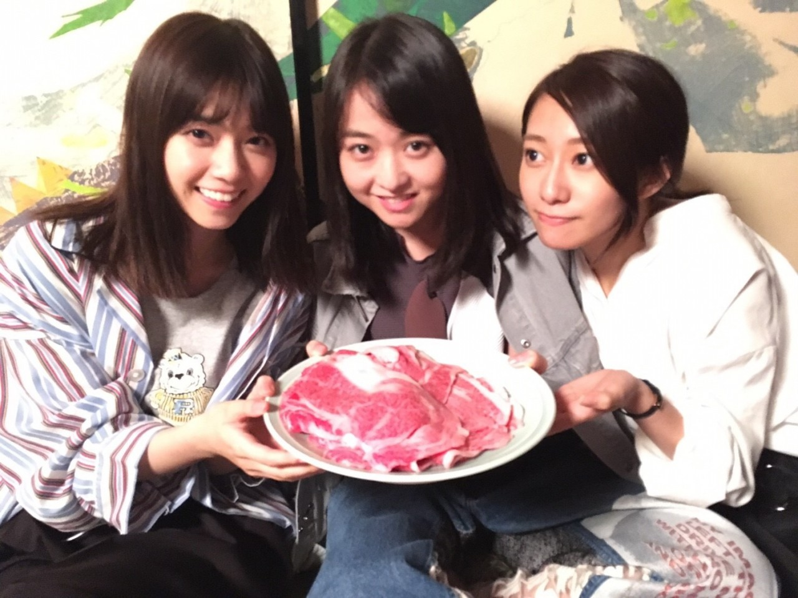
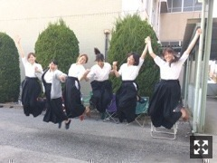
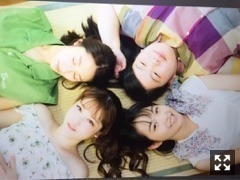
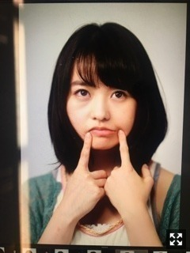

映画『あさひなぐ』
ついに公開されました！

西野桜井と大阪京都名古屋の
舞台挨拶をしました。
肉！！
初日舞台挨拶で薙刀を教えてくださった
先生、生徒さんがいらっしゃったとき
思わず泣いてしまいました。
あっという間、、ではなかったな
やっぱり薙刀を一から習うのは大変だった。
えりと共に仲間の大切さを
実感した撮影期間でした。
至らない点もあると思いますが
仲間、そして薙刀と向き合いました。
不器用ながらも逃げないで闘う
みんなを、部長をぜひ、
その目で見届けてください。

ビッグコミックスピリッツ

検索がいらないサロン予約アプリ「リクポ」
PRキャラクター大使に就任致しました。
まさかの17th個人PV「伊藤まりかっと。」
が特典映像から飛び出してCMデビューです！
WEBCMですが、
原宿でガンガン流れてるみたいです。
すげえええ！よかったね！まりかっと！
知っている人も知らない人も、
期間限定フルバージョンもチェックして、
ぜひリクポ予約でまりかっとしましょう。
まりかっとみんなおぼえて歌ってくれ！
記者会見で記者さんに紛れて座ってる
まりっかチームの福島監督と
松浦プロデューサーを見つけましたが、
運動会で子供にカメラを向ける
お母さんみたいだった、、！！
なんたる安心感！

B.L.T.20周年おめでとうございます！
『伊藤万理華の脳内博覧会』
◆GALLERY X BY PARCO
10月5日〜15日
◆KYOTO NIPPON FESTIVAL
10月21日〜12月3日
◆公式Instagram
↑毎日更新しています
みんな共に盛り上げてくれ！
まりか